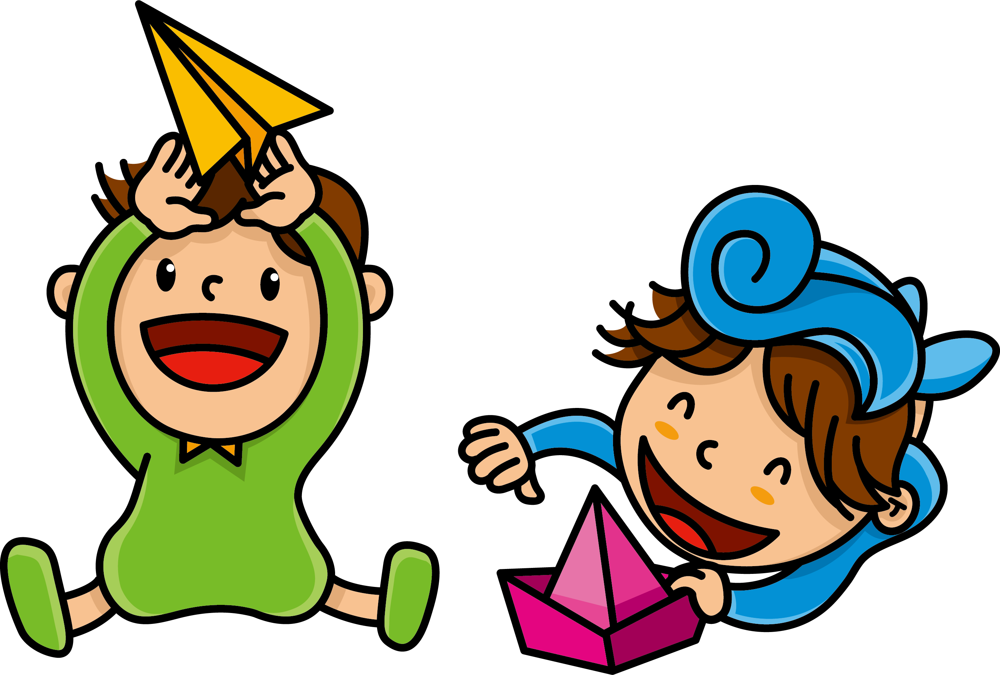

🎫 준비가 조금 더 필요해요
표(탑승권)로 쓸 그림 파일을 준비하세요.
인터넷에서
MindAR Image Compiler
페이지를 열어 그림을 올리고,
targets.mind
파일을 내려받으세요.
내려받은
targets.mind
파일을 이
index.html
과
같은 폴더에 넣고 새로고침하세요.
✈️ 비행기 탑승 게이트
탑승권을 검사하는 게이트를 엽니다
게이트 열기
📷 카메라를 켜는 중...

⛶
🎫 탑승권을 보여주세요
🔍 탑승권 검사